Diagram

Before you start
Confirm three things: a phone or camera that shoots 1080p, something to hold it steady, and one to two hours a day for seven days. You do not need editing theory or lights first.
How the path runs
Do not skip ahead. The first three days are paper and prep; days four and five are the shoot; day six is editing; day seven is delivery and review only.
- Day 1: Find the line: Write ten lines of “who + wants what + blocked by what,” each under forty Chinese characters. Circle the one whose action you can actually shoot with what you have; avoid crowds, children, or animals. Keep the other nine for later rewrites. Output: One repeatable logline and one visible ending action.
- Day 2: Eight-panel shot sheet: Draw eight panels. Each has one main action and one framing (wide, full, medium, close, or detail). Write what the person does before any line; cut any shot that needs more than two lines. Keep the total between sixty and ninety seconds. Output: An eight-panel sheet with one action and one framing per panel.
- Day 3: Location and minimum kit: Pick one controllable location: your home, a friend's place, a quiet cafe corner. Find window light before camera position; lock the camera down. Turn on the grid, lock exposure and focus, wipe the lens, and record a thirty-second test. Listen with headphones. Output: A camera diagram and one usable thirty-second test.
- Days 4–5: Shoot: Shoot the safe take first: framing, exposure, and sound all pass. Change one variable for take two: blocking, camera height, or light direction. Take three is the risk. Slate scene, shot, and take before every roll, tick the shot log, and back up the same day. Output: Three takes per shot, a matching shot log, and one backup.
- Day 6: Rough cut and sound: Assemble in the eight-panel order and trim one or two seconds from each shot. Show it to someone who does not know the story and ask who wanted what and what happened. If they cannot answer, add an action early; do not add narration. If a line is unclear, re-record or ADR it; do not bury it in music. Output: A sixty-to-ninety-second rough cut and a list of problems.
- Day 7: Subtitles, export, review: Keep captions under sixteen Chinese characters per line and break them at speech pauses. Check names, numbers, and technical terms line by line. Export 1080p H.264 with 48 kHz audio, named date_title_v1. Play it on a computer and a phone; check for black frames, dropouts, and caption errors. Output: A playable 1080p file, three review notes, and one next step.
Three exercises
- Exercise 1: Ten loglines: In twenty minutes, write ten lines; each needs one shootable action. Circle one and keep the other nine. Output: One chosen from ten.
- Exercise 2: Eight-panel sheet: Draw eight panels on one sheet with framing, action, line, and duration; total sixty to ninety seconds. Output: A shootable shot sheet.
- Exercise 3: One-minute assembly: Cut existing footage to sixty seconds, keeping only shots that move the story. No music; make dialogue work first. Output: A sixty-second v1.
Deliverables
- One logline
- One eight-panel shot sheet
- Three takes per shot and a shot log
- A sixty-to-ninety-second rough cut
- A 1080p master and three review notes
Where it goes wrong
- Rewriting the script on day five: lock the idea on day one and only make small fixes.
- Buying gear for a first film: phone, window light, and one fixed position are enough; gear turns seven days into seven weeks.
- Using three or more locations: travel, lighting, and sound double; pick one controllable place.
Next step
Next, take path-story to turn one line into three scenes, or path-post to add rough cut, sound, and delivery.
Check
- A stranger can say who wanted what and what happened.
- Every shot has a visible action and does not rely on narration.
- Every line is audible without subtitles.
- The film runs sixty to ninety seconds at 1080p and plays on a phone.
- Captions are clean and under sixteen Chinese characters per line.
- Three review notes exist, with at least one concrete next change.